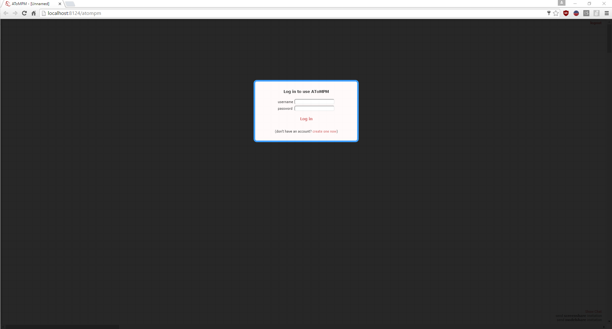
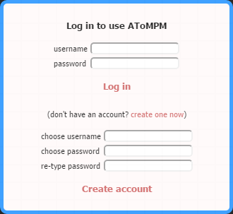
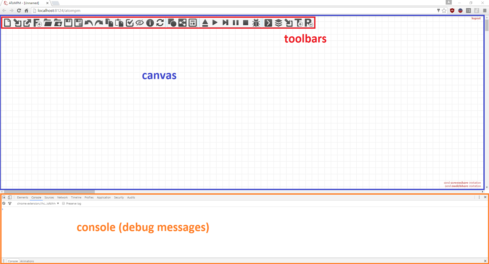
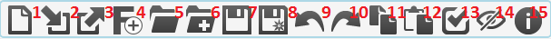
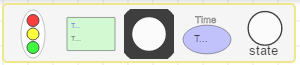
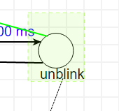
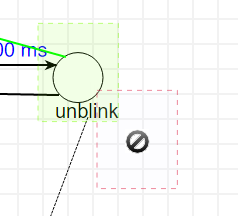
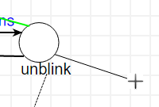
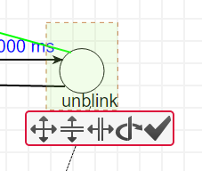
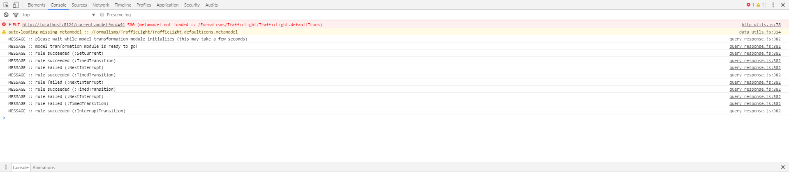

Overview¶
This section presents an overview of AToMPM’s user interface: how to create an account, and the different parts of the user interface (toolbars, canvas, and console).
First Usage¶
When first opening the user interface at localhost:8124/atompm, the user is presented with a login screen.
{kind=link}
Click the create one now link, which will allow you to create a new account with a user name and password. Fill out the form and click Create new account.
{kind=link}
AToMPM will initialize the account (by creating a user folder under the users/ folder) and switch to the main user interface view. When you revisit the AToMPM webpage or create a new AToMPM instance, the tool will remember your username and password and automatically log you in. You can log out by clicking the logout link at the top right of the user interface.
The AToMPM User Interface¶
When logged in, the AToMPM user interface is initialized with four button toolbars: MainMenu, CompileMenu, TransformationController, and TransformationEditor. They allow a langugage developer and a language user to perform most activities and are heavily used in the next sections of the documentation.
{kind=link}
The user interface of AToMPM consists of three areas: the toolbar area, contained in the canvas area, and the console. To bring up the console, in Google Chrome press the F12 key. These areas are explained in more details in the next sections.
Toolbars¶
There are two types of toolbars that can be loaded: button toolbars consist of a number of buttons that each perform a certain action, while formalism toolbars allow to instantiate language elements. A new toolbar can be loaded using the (re)load a toolbar button of the MainMenu toolbar. Toolbar models that can be loaded either have the .buttons.model extension (for button toolbars) or the .metamodel extension (for formalism toolbars).
Button Toolbars¶
All button toolbar models can be found under the /Toolbars/ user folder. A button toolbar consists of a number of buttons that, when clicked, execute a particular action. Four button toolbar are loaded by default, explained below.
- Launch a new AToMPM user interface in a new tab.
- (Re-)open a button or formalism toolbar.
- Close an opened toolbar. If this is a formalism toolbar, the model elements conforming to that formalism are removed from the model.
- Create a new formalism under the /Formalisms/ user folder with the given name.
- Open a model.
- Insert the elements of a model into the currently opened model.
- Save current model.
- Save current model as...
- Undo the last performed action.
- Redo the last undone action.
- Copy the selected elements on canvas.
- Paste the copied elements on the canvas (copy/paste also works across AToMPM tabs).
- Verify whether the constraints of the current model are satisfied.
- Show or hide entities of a particular formalism (but do not remove them from the model).
- Open the manual.
Most of these actions are intuitive. Others are explained in more detail in the next sections.

- Compile the current model (conforming to the ConcreteSyntax formalism) to a formalism toolbar.
- Compile the current model (conforming to the SimpleClassDiagram formalism) to a metamodel.
- Compile a metamodel to a pattern metamodel (and associated formalism toolbar(s)), used in model transformation rules.
More information on these buttons can be found in Creating a Modelling Language and Modelling a Model Transformation.

- Load a transformation.
- Run the currently loaded transformation until the end.
- Execute one step of the currently loaded transformation.
- Pause the running transformation.
- Stop the running transformation.
- Enable debugging, which opens a debug window when the transformation is executed that shows the transformation schedule and highlights the currently executing step.
More information on these buttons can be found in Executing a Model Transformation.

- Open a rule model.
- Open a transformation model.
- Open a formalism toolbar of a pattern metamodel.
- Create a new transformation model, and open it in a new tab.
- Create a new rule model, and open it in a new tab.
More information on these buttons can be found in Modelling a Model Transformation.
Formalism Toolbars¶
Loading a formalism toolbar allows you to create elements on the canvas conforming to that formalism. Multiple formalism toolbars can be loaded, which allows a model to contain elements conforming to multiple formalisms.
As an example, we show the formalism toolbar of the TrafficLight language, which is used throughout the readme as an example.
Each button of a formalism toolbar corresponds to an icon in the concrete syntax definition of the formalism. Links are not shown. Clicking a button will select that particular type to be instantiated. Right-clicking on the canvas instantiates the icon on the canvas. More information on how to use a formalism toolbar to model can be found in Using a Modelling Language.
Canvas¶
Below is a list of various states the Canvas can be in along with lists of actions available in each state and their corresponding shortcut(s).
When in the DEFAULT state,
| Action | Shortcut(s) |
|---|---|
| Choose an entity type to create | Left-click on desired type from a loaded formalism toolbar. |
| Create an entity | Right-click anywhere on the canvas. |
| Select an entity | Left-click any entity. This will also select the entity’s contents, if any. To select a container without selecting its contents, SHIFT-Left-click it. Enters the SOMETHING SELECTED state. |
| Select one or more entity | Left-press anywhere on Canvas, drag selection box around desired entity or entities and release. Enters the SOMETHING SELECTED state. |
| Connect entities | Right-press an entity (enters the DRAWING EDGE state), drag to-be edge to target entity and release. |
| Edit icon text | SHIFT-Middle-click any text from any icon on the Canvas (this will display a very simple text editor). |
| Edit entity | Middle-click or SHIFT-Left-click any entity on the Canvas (this will display the attribute editor). |
When in the SOMETHING SELECTED state (i.e., when one or more entity is selected), 
| Action | Shortcut(s) |
|---|---|
| Unselect selection | Right-/Left-/Middle-click anywhere on the Canvas, or click ESC. Enters the DEFAULT state. |
| Move selection | Left-press selection, drag preview overlay to desired position and release. Enters the DEFAULT state. |
| Delete selection | Press DELETE. Enters the DEFAULT state. |
| Edit first entity in selection | Click INSERT, or click COMMAND (this will display the attribute editor. |
| Change the geometry of the selection | Click CTRL. Enters the GEOMETRY EDITING state. |
| Edit the selected edge | Click SHIFT. Enters the EDGE EDITING state. |
| Snap selection to nearest grid point | Click TAB. Enters the DEFAULT state. |
When in the DRAGGING SELECTION state (i.e., when left-dragging one or more selected entity), 
| Action | Shortcut(s) |
|---|---|
| Insert selection into container | Left-release on top of the target entity. Enters the DEFAULT state. |
| Remove selection from container | Left-release outside of current container. Containment relationships can also be deleted manually if visible. Enters the DEFAULT state. |
| Confirm motion | Left-release on the Canvas. Enters the DEFAULT state. |
| Cancel motion | Click ESC. Enters the DEFAULT state. |
When in the DRAWING EDGE state (i.e., when dragging to-be edge from source to target entities), 
| Action | Shortcut(s) |
|---|---|
| Make current line horizontal/vertical | Click TAB. |
| Create control point | Left-click anywhere, or click CTRL. |
| Delete last control point | Middle-click anywhere, or click ALT. |
| Cancel current edge | Left-release anywhere on the Canvas. Enters the DEFAULT state. |
When in the EDGE EDITING state, 
| Action | Shortcut(s) |
|---|---|
| Move control point | Left-press any control point, drag it to desired position and release. |
| Vertically/Horizontally align control point to previous control point | Left-click any control point and click TAB. |
| Clone control point | Right-click any control point. |
| Delete control point | Middle-click any control point (extremities and the central control point cannot be removed). |
| Finish editing | Right-/Left-/Middle-click anywhere on the Canvas, or click ESC. Enters the DEFAULT state. |
When in the GEOMETRY EDITING state, 
| Action | Shortcut(s) |
|---|---|
| Scale | Mouse-wheel up/down on scale icon until preview overlay reaches desired shape. |
| Scale vertically only | Mouse-wheel up/down on vertical scale icon until preview overlay reaches desired shape. |
| Scale horizontally only | Mouse-wheel up/down on horizontal scale icon until preview overlay reaches desired shape. |
| Rotate | Mouse-wheel up/down on rotation icon until preview overlay reaches desired shape. |
| Cancel changes | Right-/Left-/Middle-click anywhere on the Canvas, or click ESC. Enters the DEFAULT state. |
| Confirm changes | Left-click confirmation icon. Enters the DEFAULT state. |
Console¶
The developer console (press F12 in Chrome/Firefox) contains many useful debugging messages. Especially when Executing a Model Transformation, the console contains useful information on which rules were executed and whether they failed or succeeded.
